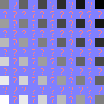
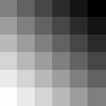

Numerical Methods Week 5¶
Curve Fitting 3¶
We continue with Curve Fitting. This week interpolation.
Learning outcomes:
Matt Watkins mwatkins@lincoln.ac.uk¶
What is Interpolation?¶
For example, suppose we have a table like this, which gives some values of an unknown function $f$ $$ \begin{array} {cc} x & f(x) \\ \hline 0 & 0.0000 \\ 1 & 0.8415 \\ 2 & 0.9093\\ 3 & 0.1411 \\ 4 & -0.7658 \\ 5 & -0.9589 \\ 6 & -0.2794 \\ \hline \end{array} $$
Interpolation provides a means of estimating the function at intermediate points, such as $x=2.5$.
There are many different interpolation methods, some of which we'll look at.
Some of the concerns to take into account when choosing an appropriate algorithm are:
Linear Interpolation¶
If we have two points we can draw a straightline between them
Solid line is the fit, dotted line is the gradient, dashed line is the curvature.
Linear Interpolation¶
If the function is not a straightline, linear interpolation will be an approximation.
The quality of the approximation will depend on how far apart the points are:
Thin line is $y = \ln x$; thick line is the fit; dotted line is the gradient; dashed line is the curvature.
Linear Interpolation¶
Geometrically, the slopes should be the same:.
$$
{\frac {y-y_{0}}{x-x_{0}}}={\frac {y_{1}-y_{0}}{x_{1}-x_{0}}},
$$
Or rearranged: $$ y=y_{0}+(x-x_{0}){\frac {y_{1}-y_{0}}{x_{1}-x_{0}}}={\frac {y_{0}(x_{1}-x)+y_{1}(x-x_{0})}{x_{1}-x_{0}}}, $$
This should remind you of the first term in a Taylor series. It is sometimes referred to as a 'lerp'.
Polynomial Interpolation¶
Approximation can be improved by using a polynomial.
We can fit a polynomial of order $n-1$ through $N$ points using brute force and a system of linear equations.
Thin line is $y = \ln x$; thick line is the fit; dotted line is the gradient; dashed line is the curvature.
Newton's Divided Difference Interpolation¶
The first divided difference is just the linear interpolation
\begin{align*}
f[x_0, x_1] = \frac{f(x_1)-f(x_0)}{x_1 - x_0} \\
f[x_1, x_2] = \frac{f(x_2)-f(x_1)}{x_2 - x_1} \\
\end{align*}
Where we have written $y_i$ as $f(x_i)$ to make the next formulae look more similar to those above.
These are the first divided differences.
Higher divided differences can be built up from the lower divided differences:
\begin{align*}
f[x_0, x_1, x_2] = \frac{f[x_1, x_2]-f[x_0, x_1]}{x_2 - x_0} \\
f[x_1, x_2, x_3] = \frac{f[x_2, x_3]-f[x_1, x_2]}{x_3 - x_1} \\
\end{align*}
These terms can be related to higher order terms of Taylor's series.
The divided difference interpolation polynomial can be written as $$ P(x) = f(x_0) + (x-x_0)f[x_0, x_1] + (x-x_0)(x-x_1)f[x_0,x_1,x_2] + \cdots + (x-x_0) \cdots (x-x_{n-1}f[x_0,x_1,\ldots,x_n]) $$ It is possible to truncate the polynomial at any term, and estimate the error, from the next term in the series.
Lagrange Interpolating Polynomials¶
One form of the Interpolating polynomials is named after Lagrange.
Notice fit is excellent in the centre of the data points, but degrades at the edges
Should not be used for extrapolation - zoom out to see!
Thin line is $y = \frac{\sin x}{x}$; thick line is the fit; dotted line is the gradient; dashed line is the curvature.
Lagrange Interpolating Polynomials¶
Examine the formula below closely - see that at each data point location $x_i$, all terms will vanish except the $i^{th}$
\begin{align*}
p(x) &= \frac{(x-x_1)(x-x_2)\cdots(x-x_n)}{(x_0-x_1)(x_0-x_2)\cdots(x_0-x_n)} y_0 + \frac{(x-x_0)(x-x_2)\cdots(x-x_n)}{(x_1-x_0)(x_1-x_2)\cdots(x_1-x_n)}y_1 +\ldots+\frac{(x-x_0)(x-x_1)\cdots(x-x_{n-1})}{(x_n-x_0)(x_n-x_1)\cdots(x_n-x_{n-1})}y_n \\
&=\sum_{i=0}^{n}\left ( \prod_{\stackrel{\!0\leq j\leq n}{j\neq i}}\frac{x-x_j}{x_i-x_j}\right ) y_i
\end{align*}
The denominator then just ensures the correct value $y_i$ is given.
- Determine the interpolating polynomial for the data $(0,1), (1,3), (3,55)$
Write a code to perform interpolation using Lagrange Interpolating Polynomials.
Is the polynomial the same as you would get using Newton's Divided Difference interpolation?
Splines¶
Instead of fitting a global, complex high-order polynomial through many points - join many simple functions together
Splines typically require that the functions go through the points and the gradient and curvature are smoothly interpolated
Requirements that the polynomials (or generally functions of finite support)
These provide sufficient conditions to determine the coefficients of the $n$ polynomials - another linear system of equations to solve.
Excel uses cubic spline interpolation for smooth graphs.
Linear Splines¶
Linear spline interpolation on a set of data points $(x_0, y_0), (x_1, y_1), ..., (x_n, y_n)$ is defined as the concatenation of linear interpolants between each pair of data points. This results in a continuous curve, with a discontinuous derivative.

The spline has a separate linear equation between each pair of points - like Excel straightline plot.
Trigonometric interpolation¶
We can use our general least squared fitting to fit a set of basis functions to our data.
This provides an approximate analytical form for the data over the whole range of the data.
Best example uses trigonometric functions $$y_i = a_0 + \sum_1^{N} b_N \sin{ (N \omega x_i)} + \sum_1^{N} b_N \cos{ (N \omega x_i)} $$ where $\omega$ is $2 \pi / (\text{range of } x)$. So, if fitting data given between -10 and 10, $\omega$ would equal $2 \pi / 20$.
Works best for continuous functions that have the same values and gradients at either end of the range fitted.
Avoids wild oscillations observed for higher order polynomial fits.
Trigonometric interpolation example¶
Fit data taken from the function $-\frac{1}{1+\exp{x^2}}$
import numpy as np
import matplotlib.pyplot as plt
%matplotlib inline
# make data - from -10 to 10 with 100 points
x = np.linspace(-10,10,100)
y = -1/(1+np.exp(x**2))
plt.plot(x,y);
plt.title(r'$y = -\frac{1}{1+\exp{x^2}}$')
plt.savefig('ploty1overexp.png')
Build z matrix and fit to 10 terms
# number of terms (including constant)
N = 10
# build z matrix
z = np.zeros((x.size,2*N-1))
z[:,0] = 1
for n in range(1,N):
z[:,n] = np.cos(2*np.pi/20*n*x)
z[:,n+N-1] = np.sin(2*np.pi/20*n*x)
# setup linear equations
zTz = np.dot(z.transpose(),z)
zTy = np.dot(z.transpose(),y)
# solve
a = np.linalg.solve(zTz,zTy)
# fitted function
f = np.zeros(x.size)
for n in range(N):
f += a[n]* np.cos(2*np.pi/20*n*x)
for n in range(N):
f += a[n+N-1]* np.sin(2*np.pi/20*n*x)
Multidimensional interpolation¶
Maybe our function is in 2 or more dimensions
$$
f = f(x,y)
$$
and now we have data in the form of triples
$$(x_i,y_i,f(x_i,y_i))$$
and want to know $f(x,y)$ at a point not in our data set.
Most common application is in image processing.

original image |

sides doubled |

interpolated |

non interpolated |
This is a very crude digital zoom.
Bilinear interpolation¶

|

|
First, linearly interpolate in $x$ direction \begin{aligned}f(x,y_{1})&\approx {\frac {x_{2}-x}{x_{2}-x_{1}}}f(Q_{11})+{\frac {x-x_{1}}{x_{2}-x_{1}}}f(Q_{21}),\\f(x,y_{2})&\approx {\frac {x_{2}-x}{x_{2}-x_{1}}}f(Q_{12})+{\frac {x-x_{1}}{x_{2}-x_{1}}}f(Q_{22}).\end{aligned}
Then interpolate in $y$ direction \begin{aligned}f(x,y)&\approx {\frac {y_{2}-y}{y_{2}-y_{1}}}f(x,y_{1})+{\frac {y-y_{1}}{y_{2}-y_{1}}}f(x,y_{2})\end{aligned}
|
|
|
\begin{aligned}f(x,y)&\approx {\frac {y_{2}-y}{y_{2}-y_{1}}}f(x,y_{1})+{\frac {y-y_{1}}{y_{2}-y_{1}}}f(x,y_{2})\\ &={\frac {y_{2}-y}{y_{2}-y_{1}}}\left({\frac {x_{2}-x}{x_{2}-x_{1}}}f(Q_{11})+{\frac {x-x_{1}}{x_{2}-x_{1}}}f(Q_{21})\right)+{\frac {y-y_{1}}{y_{2}-y_{1}}}\left({\frac {x_{2}-x}{x_{2}-x_{1}}}f(Q_{12})+{\frac {x-x_{1}}{x_{2}-x_{1}}}f(Q_{22})\right)\\ \end{aligned}
Bilinear interpolation - question¶
Suppose you have measured temperatures at a number of positions of a rectangular heated plate:
| $x_i$ | $y_i$ | $T(x_i, y_i)$ |
|---|---|---|
| 2 | 2 | 60 |
| 2 | 6 | 55 |
| 9 | 1 | 57.5 |
| 9 | 6 | 70 |
- Use bilinear interpolation to find the temperature at $(5.25, 4.8)$
- Write a code to perform a general bilinear interpolation. Test it on a simple functions, such as $f(x,y) = xy$, being careful of the domain you work in.
Summary and Further Reading¶
You should be reading additional material to provide a solid background to what we do in class
Reading: Capra and Canale, introduction to part 5 and chapter 18.
All the textbooks contain sections on interpolation, for instance chapters 3 of Numerical Recipes.
Snake¶
Use the arrow keys